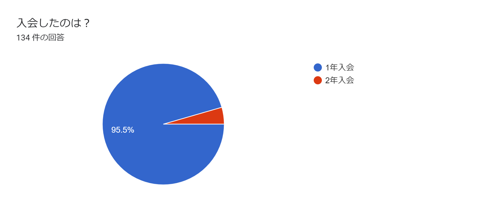
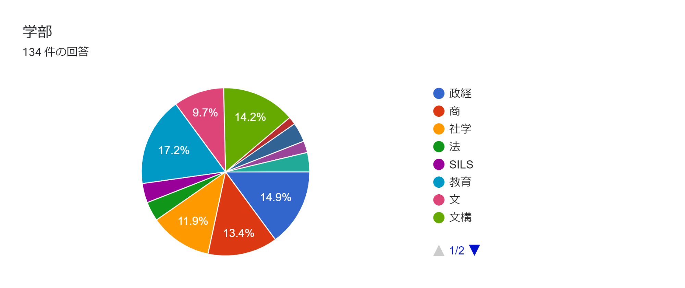
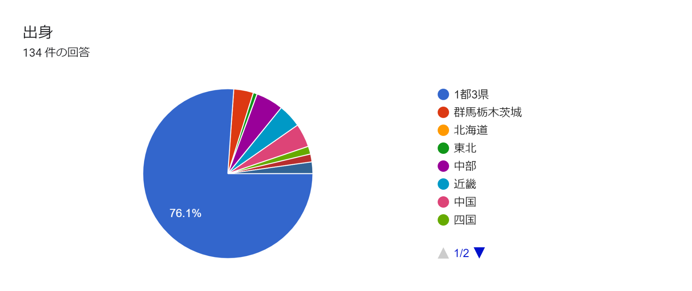
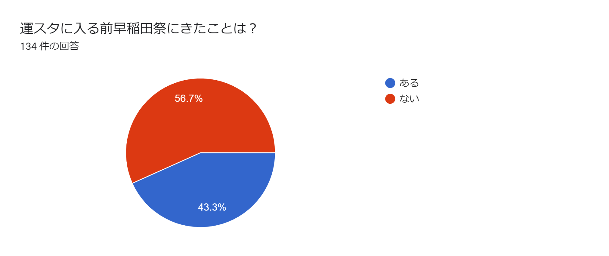

<!DOCTYPE html>
<html lang="ja">
  <head>
    <meta charset="utf-8">
    <title>よくある質問</title>
    <link rel="stylesheet" href="faq.css">
    <link rel="icon" type="png" href="logo.png">
  </head>
  <body>
       <!-- ヘッダー -->
    <header>
        <!--▽▽ヘッダーロゴ▽▽-->
              <div class="logo1">
                  <a href="#" id="headerlogo">
                  </a>
              </div>
        <!--△△ヘッダーロゴ△△-->
        
        
        <!--▽▽ハンバーガーメニュー▽▽-->
              <div id="hamburger">
                  <div class="icon">
                      <span></span>
                      <span></span>
                      <span></span>
                  </div>
              </div>
        <!--△△ハンバーガーメニュー△△-->
        
         
        <!--▽▽ハンバーガーメニューのリスト▽▽-->
              <nav class="sm navi">
                <ul class="lists">
                  <li class="lili"><a  class="listwords" href="#">代表挨拶</a></li>
                  <li class="lili"><a  class="listwords" href="#">早稲田祭について</a></li>
                  <li class="lili"><a  class="listwords" href="#">新歓イベント</a></li>
                  <li class="lili"><a  class="listwords" href="#">活動について</a></li>
                  <li class="lili"><a  class="listwords" href="#">連載記事</a></li>
                  <li class="lili"><a  class="listwords" href="#">年間スケジュール</a></li>
                  <li class="lili"><a  class="listwords" href="#">フォトギャラリー</a></li>
                  <li class="lili"><a  class="listwords" href="#">入会方法</a></li>
                  <li class="lili"><a  class="listwords" href="#">お問い合わせ</a></li>
               </ul>
             </nav>
        <!--△△ハンバーガーメニューのリスト△△-->
        
    
        <!--▽▽ヘッダーリスト▽▽-->
              <nav class="pc navi">  <!--pcクラスを追記-->
                <ul class="lists">
                  <li class="lili"><a  class="listwords" href="#">代表挨拶</a></li>
                  <li class="lili"><a  class="listwords" href="#">新歓イベント</a></li>
                  <li class="lili"><a  class="listwords" href="#">連載記事</a></li>
                  <li class="lili"><a  class="listwords" href="#">入会方法</a></li>
                  <li class="lili"><a  class="listwords" href="#">お問い合わせ</a></li>
                </ul>
              </nav>
        <!--△△ヘッダーリスト△△-->
        
            </header>
        
        
        <!--▽▽jQuery▽▽-->
            <script src="jquery-3.6.0.min.js"></script>
              <script>
                $('#hamburger').on('click', function(){
                $('.icon').toggleClass('close');
                $('.sm').slideToggle();
                });
          
              </script>
        <!--△△jQuery△△-->

    <!-- コンテンツ -->
    <div class="content">
        
        <div class="text">
            <h3>Q.男女比はどのくらいですか？</h3>
            
            <p>既存スタッフの男女比は約4:6です。<br>例年1年生の男女比は1:1程度です。</p>
            <h3>Q.新入生でなくても入れますか？</h3>
            
            <p>もちろん入ることができます！ <br>多くはありませんが毎年2年生から入会するスタッフもおり、中には4年生になっても運営スタッフを続ける者もいます。</p>
            <h3>Q.他のサークルと兼任できますか？</h3>
            
            <p>できます！ <br>既存スタッフの中にはスポーツサークルやパフォーマンスサークルと掛け持ちしている人もたくさんいます。 <br>1度きりの大学生活、目いっぱい充実させましょう！</p>
            <h3>Q.早稲田祭に参加するサークルとの掛け持ちはできませんか？</h3>
            <p>可能です！ <br>当日運営スタッフの活動を抜けたい時間がある場合は、事前に相談していただければ考慮してシフトを組むことができます。</p>
            <h3>Q.アルバイトとの両立は可能ですか？</h3>
            <p>可能です！ <br>多くのスタッフがアルバイトをしており、その種類は塾講師、飲食店、企業バイトなどさまざまです。</p>
            <h3>Q.留学に行っても大丈夫ですか？</h3>
            <p>大丈夫です！ <br>留学後、再び活動に参加することができます。<br>国際教養学部をはじめとして、留学を予定しているスタッフは多く在籍しています。</p>
            <h3>Q.どの学部の学生が多いですか？</h3>
            
            <p>早稲田祭の会場となる早稲田キャンパス・戸山キャンパスの学生が多く在籍しています。<br>もちろん西早稲田キャンパス・所沢キャンパスに通う学生も毎年一定数在籍しています。<br>他キャンパスに通う友人ができるのも運営スタッフの魅力です。</p>
            <h3>Q.早稲田祭当日はどんな仕事をしますか？</h3>
            <p>構内の警備から企画の運営、来場者の案内など、さまざまな仕事をしています。<br>当日はキャンパス内から周辺地域にいたるまで、あらゆるところで活躍しています。</p>
            <h3>Q.早稲田祭当日はどのくらい忙しいですか？</h3>
            <p>どのスタッフも基本的に終日シフトがありますが、所属する局・チームによって活動の忙しさには違いがあります。<br>仕事をしつつ企画を回る余裕のあるスタッフもいれば、1日中キャンパス中を駆け回るスタッフもおり、さまざまです。</p>
            <h3>Q.早稲田祭当日以外はどのくらい忙しいですか？</h3>
            <p>毎週月曜日と木曜日にミーティングがあります。<br>ひとつ前の質問で回答したように早稲田祭当日以外の方が忙しい局もあり、<br>そういった局はミーティングのある月曜日、木曜日以外にも活動しています。<br>多くの局は早稲田祭が近づく10月～11月頃は忙しくなる傾向があります。</p>
            <h3>Q.どの程度費用が掛かりますか？</h3>
            <p>早稲田祭は自主財源で運営しており、祭前に運営スタッフから毎年運営費を回収しています。<br>参考程度になりますが、昨年度は9月末に10,000円を回収しました。</p>
            <h3>Q.地方出身のスタッフはどれくらいいますか？</h3>
            
            <p>3割程度います。<br>昨今の情勢の中で地元から活動に参加するスタッフもいれば、上京して寮生活や一人暮らしをしながら活動するスタッフもいます。</p>
            <h3>Q.早稲田祭に行ったことがないのですが入会できますか？</h3>
            
            <p>できます！ <br>6割近くの既存スタッフが、運営スタッフになる前に早稲田祭に訪れたことがありませんでした。<br>当日の様子を知らなくても既存スタッフから教わることができるため、活動に支障をきたすことはないので安心してください！</p>
        </div>
    </div>
            <!-- フッター -->
            <footer>
                <div class="wrapper2">
                    <p class="title">WASEDASAI OPERATION STAFF</br>SHINKAN 2021</p>
          <div class="innerbox">
                
              <a href="https://twitter.com/wasedasai_new?ref_src=twsrc%5Egoogle%7Ctwcamp%5Eserp%7Ctwgr%5Eauthor" target="_blank" > 
                   
              </a>

              <a href="https://www.instagram.com/wasedasai_new/" target="_blank" > 
                   
              </a>

              <a href="https://qr-official.line.me/sid/M/011uqnra.png" target="_blank" > 
                   
              </a>

              <a href="https://www.youtube.com/channel/UCFh9blapIkxPf4Al3L87QHQ" target="_blank" > 
                   
              </a>
          </div>
      </div>
          <div class="footerlogo">
              <a href="toppage.html" target="_blank" > 
                   
              </a>
          </div>


          </div>
          <p><small>Copyright @ WASEDASAI2021 Staff All Rights Reserved. </small></p>
      </div>
  </footer>
  </body>

</html>
